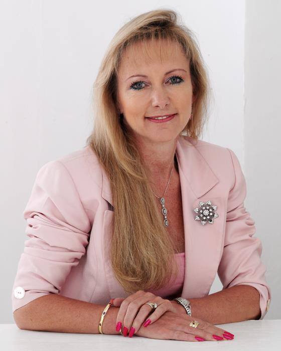

South African Chamber of Commerce Website Planning Document
Target audience:
The target audience of the South African Chamber of Commerce is all business owners in South Africa. All are welcome to join as long as you are an adult that is 18 years and older.
Personas:
SHARON CONSTANÇON (DIRECTOR AND CHAIRMAN)
 Sharon is a corporate governance specialist and foreign currency adviser renowned for getting things done. An energetic entrepreneur with a keen eye for risk, recognising opportunities, and understanding the value of good governance, Sharon will focus on delivering against the strategic plan which she shared in creating this last year. South African born of English parents, Sharon has business interests in South Africa and the UK, and is fully aligned to a key strategic goal of developing bilateral trade between the countries. The Board welcome her business and strategic experience, her corporate network and passion for the Chamber. Her business acumen and vision will support the growth in membership and ongoing development of the Chamber.
Sharon is CEO of Genius Methods and of Valufin, is a Member of the International Committee of the CISI and a Non-Executive Director at Caban Capital plc. She holds an MBA, is a Chartered Director, a Chartered Secretary, Fellow of the Governance Institute, a Freeman of the Worshipful Company of Company Secretaries and Administrators and winner of a SACC Business Award. In Sharon’s words “This is a great opportunity to create an energy for the various pillars of activity – to deliver value add to business, charity, politics and networking, a place to be seen and to learn.”
SARAH HUTTON (DIRECTOR)
Sarah Hutton is a South African born business woman who has had the pleasure of a career working around the world. As Human Resources Director for Coca-Cola, Sarah aligns the HR Agenda with business strategy and measurable results.
Holding an MSc, Management (Industrial Relations), degree from Oxford University, Sarah is highly valued by the leadership teams she works with, for delivering pragmatic HR solutions to meet business needs on a daily basis, but also for driving large scale organisational change. Sarah has throughout her career at Coca-Cola, been a formal mentor to women in early and mid-career, through a program called “women in leadership”.
Sarah is a qualified Chartered Accountant and a member of SAICA and ICAEW.
Scenarios:
- How do I become a member of the Chamber?
- How can I use the Chamber to get more business contacts?
- How can I use the Chamber to increase my business's visiblility?
- What can I learn from other business owners in the area?
- What events are coming up?
- How can I improve my business standing within South Africa